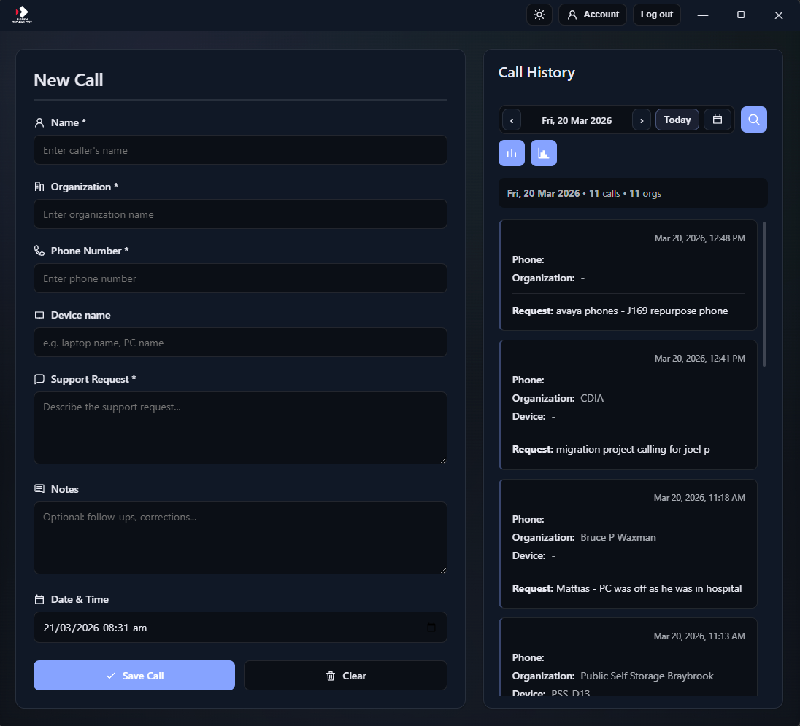

For support teams
Call Log
Support calls, logged clearly
An Electron desktop app built for help-desk and phone support: log a call in New Call, then review and search the same day’s entries in Call History. You sign in with your work email; calls are stored in Supabase so your team shares one timeline. Browse by day (including a calendar picker), run in-app statistics, open reports when your project has reporting enabled, and get desktop notifications when teammates log calls.

New Call form
Required: caller name, organization, phone, and support request. Optional device name and notes. Date and time default to now; change them if you are logging a past call. Click Save Call to write the entry; Clear resets the form.
Call History
The right panel lists calls for the selected day. Use previous/next day, Today, or the calendar to change the day. Search (including Ctrl+F) filters within that day across name, phone, organization, device, request, and notes. Entries can be edited or removed from the list when you need to correct a log.
Stats and reports
Open statistics from the history toolbar for aggregates on your data. The reports control appears when Supabase is configured and can surface periodic snapshots if your backend enables reporting (see the repo’s reporting docs).
Sign-in and cloud data
The app expects a Supabase project in the build: you sign in or sign up with email and password. Calls are stored per account with row-level security; the app does not save calls without a valid configuration and session.
Team realtime
With Supabase Realtime enabled on the calls table, the list refreshes when someone else logs a call. You can get in-app and desktop (tray) notifications for teammate activity—without notifying you for your own saves.
Organization lookup (optional)
If your Supabase project has the Autotask integration wired up, the organization field can suggest companies as you type (authenticated requests via an Edge Function). If that integration is not deployed, you still type organizations manually.
Desktop shell
Runs as a native Electron window with a custom title bar, minimize / maximize / close, dark mode toggle, account and logout when online, and optional window height fitting to content on first run.
Open source
MIT-licensed. Download installers from GitHub Releases, or build from source with Node.js. Developers configure supabaseConfig.js before packaging; end users receive a build that already includes your project keys.